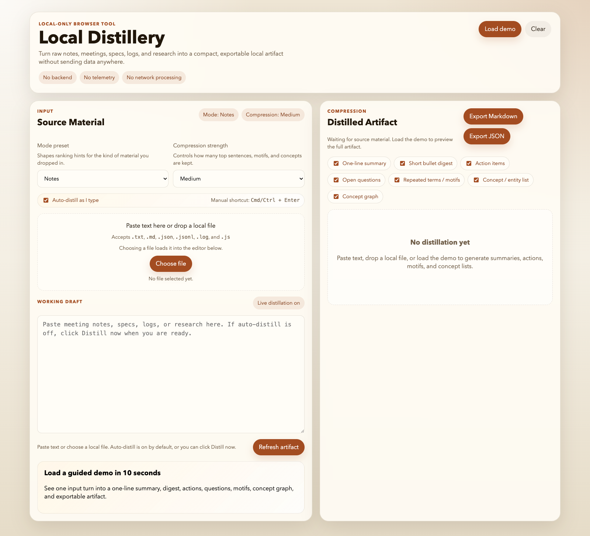

Step 1
The empty state now explains the payoff before asking for input.
The old experience felt more like a blank utility. The improved first screen makes the demo path and the output shape much clearer.

Clear promise
The product tells you what it does and what it does not do before you touch anything.
Guided first move
A demo-first empty state reduces the “what am I supposed to paste here?” feeling.